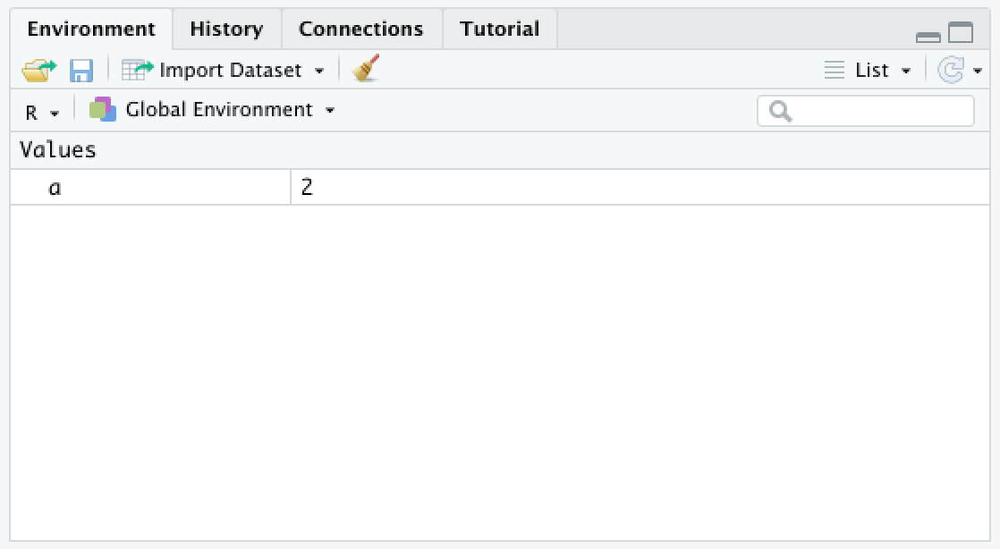

1 RStudio and R notebooks
Let’s get started!
Launch RStudio.
1.1 RStudio
As mentioned above, RStudio is a very nice, but optional, IDE for R. All of the code for this course will work just as well on the command line, but RStudio provides a number of features that improve the experience of learning to the basics of R.
Your RStudio window should look something like this:

New Rstudio session
1.1.1 The console
On the left hand side is the console. This is a command-line interface for R; you type a command, press enter to run it, and the result will appear below.
Running a simple command
In R the prompt is a > character. When you see this character at the beginning of the line in your console, it means that R is waiting for you to type your next command.
In this course, code is going to appear in gray boxes, like this:
Whenever you see one of these boxes, try running the code yourself.
What happens if you press enter before you meant to?
An incomplete command
If you press enter before finishing a command, the next line will begin with a + character. This lets you know that R is expecting more input.
1.1.2 The workspace browser
In the upper right panel is the workspace (or environment) browser. This part of the window shows the objects present in the environment. Currently there are none.
In programming generally, the environment is the context in which code is run: the operating system, software installed, and many other things. What this Rstudio environment browser is showing is a much more limited and specific context: the current values of any objects you have assigned.
The easiest way to explain an object is to run some code.
Run the code in the gray box above.
Assigning output
Unlike the first time we ran 1 + 1, nothing is printed to the console.
 Instead, a new value appears in the workspace browser.
Why? The <- is a special pair of characters called the assignment operator that stores the result of the addition in the object referred to on the left-hand side of the “arrow.”
Since no object called “a” existed in R’s environment, R created a new object “a” to hold the result of the addition operation 1 + 1.

Evaluating a variable
When typed into the console, the object, or “variable,” is evaluated, and R returns its value, 2. Until this variable is removed or reassigned, any place we use a in our code, R will evaluate the variable, and replace it with a 2.
The <- character pair, is one of two assignment operators in R. In most situations, it is equivalent to the = character, but there are some exceptions, which we will address when they come up. This documentation follows the R convention of using <- in most cases.
1.1.3 Help documentation
The lower right pane contains the file browser, plot viewer, and help documentation, which we will be using frequently.
1.2 R notebooks
Create a new R notebook using the menu bar at the top: File > New File > R Notebook.
A fourth pane will open up containing a template R notebook. It should look something like this:
An R Notebook
R notebooks are a special type of markdown document incorporating executable R code chunks and their output, along with text that can be formatted using special characters to encode formatting like headings, bold or italic fonts, bullet points, links, and more.
Markdown is designed to be readable as-is, but it can be converted to PDF or HTML. Using an R notebook keeps any commentary, code, and figures for a project in one place, and makes it easy to generate a nicely formatted report. This web page is the product of an R notebook!
Within a notebook, code is organized into chunks, which separates the text R will evaluate from any notes or images included in the notebook.
New chunks are added by clicking the Insert Chunk button on the toolbar or by pressing Ctrl+Alt+I on Windows, or Cmd+Option+I on Mac.
Code chunks are executed by clicking the Run button within the chunk or by placing your cursor inside it and pressing Ctrl+Shift+Enter on Windows, or Cmd+Shift+Enter on Mac. You can run a single line of code by placing your cursor anywhere on the line and pressing Ctrl+Enter on Windows, or Cmd+Enter on Mac.
Create and run a new chunk with the following code:
What happened? Where did the output for each line of code go?
Set up a folder for the course, and save your notebook.
Create a folder to contain all of the files for this course. This can be anywhere you like: Desktop, Documents folder, etc. Save your R notebook to that folder. In this case, the location and name do not matter very much, as long as you will be able to find them later.
However, this is a good time to put file naming best practices to use! Directories (folders) and the files they contain should be named without spaces or special characters. Using only alphanumeric characters, dots, dashes, and underscores ensures that most programming languages will be able to understand the name of your file without any problems. If you use special characters like dollar signs, slashes, quotation marks, spaces, or parentheses, this is not always the case.
For example, my R notebook is saved in a folder on my desktop called “intro_R.” The notebook itself is called “intro_R_1.Rmd.” If you are familiar with the command line, you may be able to guess that the absolute path to my notebook is /Users/hannah/Desktop/intro_R/intro_R_1.Rmd. If you aren’t familiar with the command line, that’s ok. One of the nice features of Rstudio is the graphical user interface (GUI) that means you won’t need to interact directly with the command line often.